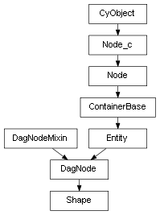

class cymel.core.cyobjects.shape.Shape¶

- class cymel.core.cyobjects.shape.Shape(*args, **kwargs)¶
Bases:
DagNodeshape Node type wrapper class.
Supports node generation when creating a class instance without fixed arguments.
Methods:
createNode([ttype, tparent])Generates a shape node of the type associated with the class.
Attributes:
- TYPE_BITS = 5¶
Represents the characteristics of nodes supported by the class.
Method Details:
- classmethod createNode(ttype='transform', tparent=None, **kwargs)¶
Generates a shape node of the type associated with the class.
This method itself returns the name (string) of the created node, but is called internally when creating a class instance without fixed arguments.
For base methods, transform node control has been added for shape.
If the parent (or p) option is specified, the base method is called as is, otherwise the node name is attached to the transform node and the shape name is automatically determined from there.
- Parameters:
ttype (str) – Specifies the type name of the transform family node that is simultaneously generated as the parent of the shape when the parent (or p) option is not specified.
tparent (str) – Allows you to specify the parent of a transform that will be generated at the same time if the parent (or p) option is not specified.
kwargs – You can specify other options for the createNode command.
- Return type:
Note
For custom node classes registered with
nodetypes.registerNodeClass, it is recommended to override to add processing to satisfy the conditions of the_verifyNodemethod.